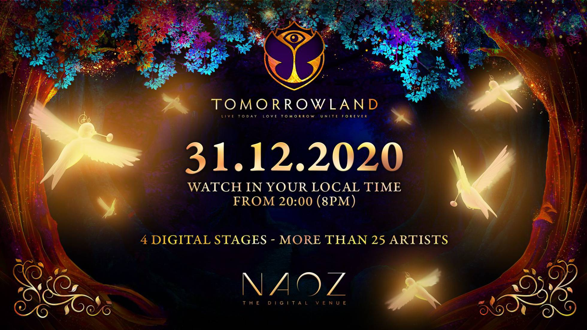
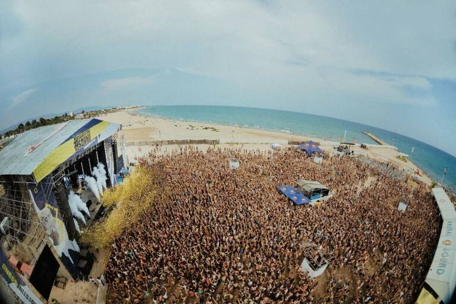

Anuel AA anuncia una larga gira por España en el verano de 2021 Hará 23 paradas en total en España entre junio y septiembre de 2021. Anuel AA priva a Taylor Swift del número 1 en discos en España. El artista número 1 en España gracias al disco Emmanuel, ha anunciado la celebración entre junio y septiembre de 2021 de una gira con 23 paradas por este país, entre ellas, Madrid, Barcelona, Málaga, Valencia, Bilbao, Alicante, Almería, Granada, Murcia, Galicia, Canarias e Ibiza. A falta de conocer las fechas y lugares concretos, su oficina solo ha confirmado que, bajo el nombre de Emmanuel Tour 2021, esta incursión en Europa también incluirá citas en capitales como Londres, París, Roma y Estocolmo.
La noticia llega en uno de los momentos de máximo apogeo para este puertorriqueño que ya acumula seis semanas en lo más alto de la lista oficial de Promusicae de los álbumes de mayor éxito en España, tanto en ventas como en reproducciones. De hecho, Emmanuel acaba de alcanzar la calificación de disco de oro tras acreditarse más de 20.000 unidades vendidas o equivalentes. Con éxitos como China, junto a su pareja, la colombiana Karol G, este álbum tomó el relevo al también exitoso álbum previo del artista, Real hasta la muerte (2018), que lo trajo de gira por España a espacios multitudinarios como el Wizink Center de Madrid o el Palau Sant Jordi de Barcelona. De nombre real Emmanuel Gazmey, inició su carrera musical en 2011 con el tema Demonia junto a Ñengo Flow y siguió grabando temas en los años siguientes que incrementaron su fama mundial, sobre todo a partir de La ocasión, en el que colaboraban Ozuna, Arcángel y De La Ghetto. Tras cumplir una condena de 30 meses de prisión por posesión de armas en su país, Anuel AA comenzó a despuntar definitivamente con sus dos álbumes en el mercado, el último de los cuales incluye la participación de otras figuras como Daddy Yankee, Tego Calderon, Enrique Iglesias y Bad Bunny.
Tras su estreno digital en verano, la cita musical anuncia un nuevo evento de pago online liderado por David Guetta
omorrowland, el festival de música electrónica más famoso del mundo, ha anunciado hoy que celebrará una nueva edición virtual en Nochevieja para reeditar el éxito mundial de su estreno digital, este pasado mes de julio. Con los tradicionales cotillones de Año Nuevo en stand by por la pandemia, la cita belga espera que miles de españoles se conecten online —al igual que en verano— para despedir 2020 y dar la bienvenida al año nuevo bailando con los mejores DJs del mundo. De esta forma, la música sonará desde las 20:00 de la tarde hasta las 3:00 de la madrugada. Este nuevo proyecto digital se llama Tomorrowland 31.12.2020 y seguirá la senda de su antecesor, Tomorrowland Around the World: será una sofisticada experiencia de entretenimiento audiovisual a medio camino entre el cine, la música y los videojuegos. Se podrá ver desde cualquier ordenador, smartphone o tablet pagando un ticket de acceso que tendrá un valor de 20 euros y se pondrán a la venta el martes 17 de noviembre en la web del festival. Para los que no vayan a pasar la última noche del año en España o en su misma longitud planetaria, la organización ha adaptado la emisión a 27 zonas horarias distintas. El nombre de la nueva sede imaginaria de Tomorrowland será NAOZ, tendrá 4 escenarios, y estará diseñada con las tecnologías más punteras en 3D, producción de vídeo y efectos especiales. Precisamente, estos días se están grabando en Boom (Bélgica) las actuaciones de los DJs europeos frente a una enorme pantalla verde de chroma key. Con esta fórmula y la espectacular calidad de su grafismo digital, Tomorrowland ha revolucionado la emisión de eventos musicales online, fijando un nuevo estándar de calidad técnica y visual. De hecho, este verano, un millón de personas de todas partesd del mundo pudieron disfrutar del show en directo desde sus casas y el festival incluso logró cuadrar los números. El cartel de esta particular edición navideña de Tomorrowland lo encabeza David Guetta, flamante premio a mejor DJ del mundo, otorgado anualmente por la revista británica Dj Mag. Junto a él actuarán estrellas de la electrónica como Major Lazer, Armin van Buuren, Martin Garrix, Dimitri Vegas & Like Mike, Charlotte de Witte o Meduza. En la programación también está confirmada la presencia de la leyenda del hip-hop Snoop Dogg.
Los festivales de música miran los avances y retrocesos del coronavirus con lupa. La gran pregunta se cierne sobre ellos: tras la cancelación de sus ediciones en 2020, ¿habrá temporada estival 2021? Las noticias sobre la vacunan tienen que haber inyectado un chute de optimismo, la clave está en cuál será la nueva nueva normalidad a partir de mayo, cuando finalice el Estado de Alarma y, previsiblemente, la cura del coronavirus se esté distribuyendo con cierta normalidad. Es un escenario muy optimista y que no asegura nadie, ni en Sanidad ni en la comunidad científica. Salvo que esto ocurra, es muy posible que los macrofestivales se puedan celebrar, o al menos, que lo hagan como se hacía antes. En todo caso, toca mover ficha, y los primeros han sido los promotores de festivales como Arenal Sound, Festival de Les Arts o FIB, que ya han anunciado a través de las redes sociales las fechas de celebración (previstas), que anuncian una primavera en silencio, un verano normal, y un otoño para recuperar el tiempo perdido. Según los planes de The Music Republic, Festival de Les Arts sería el primero en abrir la veda, el 4 y 5 de junio del próximo año, tras probar su formato Lite en La Marina este verano. El festival, que se canceló este año, intentó tan solo posponerse hasta el 2 y 3 de octubre de este 2020, finalmente la organización lo aplazó varios meses más. El FIB sería el siguiente, del 15 al 18 de julio. Sería, por fin, la primera edición de una nueva era, ya que, tras el traspaso de propiedad entre promotoras, 2020 era el primer año del nuevo festival, al que se esperaba con muchas expectativas encuentros y desencuentros con su propia historia. Finalmente, Arenal Sound ubica la fecha de su próxima edición desde el 29 de julio hasta el 4 de agosto. El festival de Burriana es el segundo con más asistencia de España, tan solo por detrás del Medusa Sunbeach, según la asociación de promotores, así que será la auténtica prueba de fuego: cómo se celebre el Arenal Sound querrá decir mucho de lo que se normalice la situación en el sector de la música en directo, prácticamente en silencio desde finales de agosto en la Comunitat. A partir de entonces, The Music Republic también propone fechas del resto de sus festivales en cartera: Interestelar Sevilla (del 3 al 5 de septiembre), Granada Sound (18 y 19 de septiembre), Madrid Salvaje (1 y 2 de octubre) y Viña Rock (del 9 al 11 de octubre, coincidiendo con el Día de la Comunitat Valenciana, de la que se nutre en buena medida el festival). Las fechas, propuestas en un primer momento tras sus respectivos aplazamientos son ahora anunciadas otra vez por la promotora en redes sociales, una señal de vida que les ubica un paso por delante del resto de macrofestivales, todavía más recelosos que contar sus planes para 2021. ¿La idea de The Music Republic? Que vuelva la música como siempre. Ahora solo falta que la situación lo permita.
